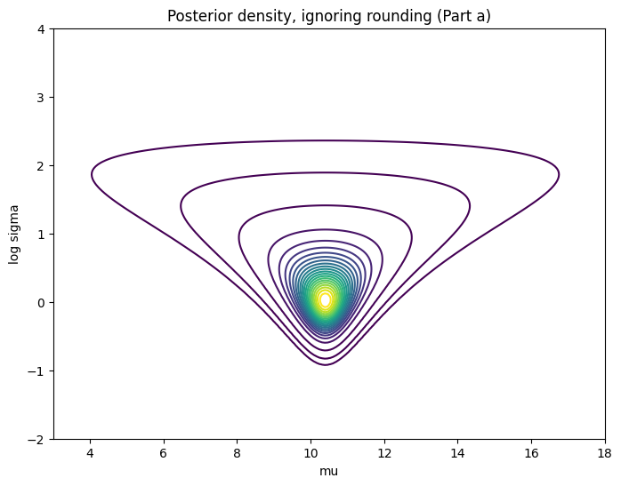

Bayesian Analysis with Rounded Data
Problem Statement
It is a common problem for measurements to be observed in rounded form (for a review, see Heitjan, 1989). For a simple example, suppose we weigh an object five times and measure weights, rounded to the nearest pound, of 10, 10, 12, 11, 9. Assume the unrounded measurements are normally distributed with a noninformative prior distribution on the mean $\mu$ and variance $\sigma^2$.
- Give the posterior distribution for $(\mu, \sigma^2)$ obtained by pretending that the observations are exact unrounded measurements.
- Give the correct posterior distribution for $(\mu, \sigma^2)$ treating the measurements as rounded.
- How do the incorrect and correct posterior distributions differ? Compare means, variances, and contour plots.
- Let $z = (z_1, \dots, z_5)$ be the original, unrounded measurements corresponding to the five observations above. Draw simulations from the posterior distribution of $z$. Compute the posterior mean of $(z_1 - z_2)^2$.
Solutions
(a) The 'Incorrect' Posterior (Pretending Data is Exact)
We are asked to pretend the observations $y = (10, 10, 12, 11, 9)$ are exact. This is a standard Bayesian problem with a Normal likelihood and unknown mean $\mu$ and variance $\sigma^2$.
- Likelihood: $p(y | \mu, \sigma^2) = \prod_{i=1}^n N(y_i | \mu, \sigma^2)$
- Prior: The noninformative prior is $p(\mu, \sigma^2) \propto \frac{1}{\sigma^2}$
First, we calculate the summary statistics from the data:
- Sample size: $n = 5$
- Sample mean: $\bar{y} = \frac{10+10+12+11+9}{5} = \frac{52}{5} = 10.4$
- Sample variance: $s^2 = \frac{1}{n-1} \sum_{i=1}^n (y_i - \bar{y})^2$
$s^2 = \frac{1}{4} [ (10-10.4)^2 + (10-10.4)^2 + (12-10.4)^2 + (11-10.4)^2 + (9-10.4)^2 ]$
$s^2 = \frac{1}{4} [ 0.16 + 0.16 + 2.56 + 0.36 + 1.96 ] = \frac{5.2}{4} = 1.3$
For this model, the joint posterior distribution $p(\mu, \sigma^2 | y)$ is a Normal-Inverse-Gamma distribution. The marginal posterior distributions for $\mu$ and $\sigma^2$ are:
- Marginal Posterior for $\sigma^2$: The posterior for $\sigma^2$ is a scaled Inverse-$\chi^2$ distribution (which is a special case of the Inverse-Gamma distribution): $$ p(\sigma^2 | y) \sim \text{Inv-Gamma}\left(\frac{n-1}{2}, \frac{(n-1)s^2}{2}\right) $$ Plugging in our values: $$ p(\sigma^2 | y) \sim \text{Inv-Gamma}\left(\frac{4}{2}, \frac{4 \times 1.3}{2}\right) \equiv \text{Inv-Gamma}(2, 2.6) $$
- Marginal Posterior for $\mu$: The posterior for $\mu$ follows a Student's t-distribution, centered at the sample mean: $$ p(\mu | y) \sim t_{n-1}\left(\bar{y}, \frac{s^2}{n}\right) $$ Plugging in our values: $$ p(\mu | y) \sim t_4\left(10.4, \frac{1.3}{5}\right) \equiv t_4(10.4, 0.26) $$ This means the quantity $\frac{\mu - 10.4}{\sqrt{0.26}}$ follows a standard t-distribution with 4 degrees of freedom.
(b) The 'Correct' Posterior (Treating Data as Rounded)
In this part, we acknowledge that the data is rounded. The observation $y_i$ is not the true value $z_i$. Instead, an observation like $y_i = 10$ means the true, unrounded value $z_i$ lies in the interval $[9.5, 10.5)$.
In general, an observation $y_i$ implies $z_i \in [y_i - 0.5, y_i + 0.5)$.
The likelihood contribution from a single observation $y_i$ is no longer a density, but the probability that the true value $z_i$ falls into the corresponding interval: $$ L(y_i | \mu, \sigma^2) = P(y_i - 0.5 \le z_i < y_i + 0.5) \quad \text{where } z_i \sim N(\mu, \sigma^2) $$
We express this probability using the Cumulative Distribution Function (CDF) of the Normal distribution. Let $\Phi(x)$ be the CDF of the standard Normal $N(0, 1)$ distribution.
The likelihood for one point $y_i$ is: $$ L(y_i | \mu, \sigma^2) = \Phi\left(\frac{(y_i + 0.5) - \mu}{\sigma}\right) - \Phi\left(\frac{(y_i - 0.5) - \mu}{\sigma}\right) $$
The full likelihood $L(y | \mu, \sigma^2)$ is the product of these terms for all $n=5$ observations. Our data is $y = (10, 10, 12, 11, 9)$.
$$ L(y | \mu, \sigma^2) = \prod_{i=1}^n \left[ \Phi\left(\frac{y_i + 0.5 - \mu}{\sigma}\right) - \Phi\left(\frac{y_i - 0.5 - \mu}{\sigma}\right) \right] $$Substituting our specific data points:
$$ L(y | \mu, \sigma^2) = \left[ \Phi\left(\frac{10.5 - \mu}{\sigma}\right) - \Phi\left(\frac{9.5 - \mu}{\sigma}\right) \right]^2 \times $$ $$ \left[ \Phi\left(\frac{12.5 - \mu}{\sigma}\right) - \Phi\left(\frac{11.5 - \mu}{\sigma}\right) \right] \times $$ $$ \left[ \Phi\left(\frac{11.5 - \mu}{\sigma}\right) - \Phi\left(\frac{10.5 - \mu}{\sigma}\right) \right] \times $$ $$ \left[ \Phi\left(\frac{9.5 - \mu}{\sigma}\right) - \Phi\left(\frac{8.5 - \mu}{\sigma}\right) \right] $$Finally, the posterior distribution is proportional to the likelihood times the prior. Using the same noninformative prior $p(\mu, \sigma^2) \propto \frac{1}{\sigma^2}$:
$$ p(\mu, \sigma^2 | y) \propto p(y | \mu, \sigma^2) \times p(\mu, \sigma^2) $$ $$ p(\mu, \sigma^2 | y) \propto \frac{1}{\sigma^2} \prod_{i=1}^n \left[ \Phi\left(\frac{y_i + 0.5 - \mu}{\sigma}\right) - \Phi\left(\frac{y_i - 0.5 - \mu}{\sigma}\right) \right] $$This is the final expression for the correct posterior distribution. Unlike in part (a), this is not a standard, named distribution. Its properties (like mean and variance) cannot be found with a simple formula and must be computed numerically, for example, by using MCMC or grid sampling.
(c) Comparison of the Distributions
Here we compare the two posterior distributions: the 'incorrect' one (Part a) which treated the data as exact, and the 'correct' one (Part b) which properly accounted for rounding.
Visual Comparison: Contour Plots
The contour plots show the joint posterior density $p(\mu, \log(\sigma) | y)$. Visually, the two distributions are nearly identical, suggesting that for this specific dataset, the effect of rounding is minimal.
Part (a): 'Incorrect' Model (Exact Data)
Part (b): 'Correct' Model (Rounded Data)
.png)
Numerical Comparison: Posterior Summaries
The numerical summaries from the analysis confirm the visual finding. The posterior means, standard deviations, and 95% credible intervals are all extremely close for both models.
| Model | Parameter | Mean | Std. Dev. | 95% Credible Interval |
|---|---|---|---|---|
|
Part (a): 'Incorrect' (Analytical) |
$\mu$ (mu) | 10.4127 | 0.7290 | [8.9086, 11.8609] |
| $\sigma$ (sd) | 1.4422 | 0.7286 | [0.6740, 3.3588] | |
|
Part (b): 'Correct' (Grid Sampling) |
$\mu$ (mu) | 10.3834 | 0.7126 | [8.9548, 11.7437] |
| $\sigma$ (sd) | 1.3671 | 0.6826 | [0.6111, 3.2086] |
Analysis of Differences
Conclusion: For this specific problem, the 'incorrect' posterior (Part a) serves as an excellent approximation of the 'correct' posterior (Part b). The effect of treating the rounded data as exact is negligible.
- The posterior means for both $\mu$ (10.41 vs. 10.38) and $\sigma$ (1.44 vs. 1.37) are extremely close.
- The 95% credible intervals are also nearly overlapping.
- This indicates that the information lost or distorted by the rounding process was not significant enough to change our final conclusions about the parameters.
Python Code for Part (c)
The numerical results in the table above were generated using the Python script shown in the final section. That script implements the analytical solution for Part (a) and the grid-sampling approximation for Part (b).
(d) Simulating $z$ and finding $E[(z_1 - z_2)^2 | y]$
We need to compute the posterior mean of $(z_1 - z_2)^2$, where $z_1$ and $z_2$ are the *unrounded* measurements corresponding to the first two observations, $y_1 = 10$ and $y_2 = 10$.
The 'incorrect' model from Part (a) would assume $z_1 = 10$ and $z_2 = 10$, so it would conclude that $E[(z_1 - z_2)^2 | y] = 0$.
The 'correct' model (Part b) acknowledges that $z_1$ and $z_2$ are two independent draws from the (unknown) distribution $N(\mu, \sigma^2)$, both of which happened to fall in the rounding interval $[9.5, 10.5)$. To find the posterior mean, we:
- Draw a sample $(\mu_j, \sigma_j)$ from the 'correct' posterior $p(\mu, \sigma | y)$ (which we did in Part b).
- Draw $z_1^{(j)}$ from $N(\mu_j, \sigma_j^2)$ truncated to the interval $[9.5, 10.5)$.
- Draw $z_2^{(j)}$ from $N(\mu_j, \sigma_j^2)$ truncated to the interval $[9.5, 10.5)$.
- Compute the squared difference: $(z_1^{(j)} - z_2^{(j)})^2$.
- Repeat this process many times (e.g., 2000) and find the average.
This is accomplished using the inverse transform sampling method, as implemented in the Python script.
Posterior Mean of $(z_1 - z_2)^2$
Running this calculation with the Python script yields the posterior mean:
0.1577
Python Code for Part (d)
This result was generated by the final section of the Python script below, which implements the inverse transform sampling method described in the list above.
Complete Python Code (Parts c & d)
This single Python script (using numpy and scipy) generates all the numerical results for the tables in Part (c) and the final value for Part (d).
import numpy as np
from scipy.stats import norm, chi2
# ===================================================================
# 1. HELPER FUNCTIONS
# ===================================================================
def post_b(mu, sd, y):
"""Log-likelihood for Part (b), treating data as rounded."""
p_upper = norm.cdf(y + 0.5, loc=mu, scale=sd)
p_lower = norm.cdf(y - 0.5, loc=mu, scale=sd)
likelihood = p_upper - p_lower + 1e-10
if np.any(likelihood <= 0):
return -np.inf
return np.sum(np.log(likelihood))
def summ(x, name):
"""Helper function to print summaries."""
quantiles = np.quantile(x, [0.025, 0.5, 0.975])
print(f"\n--- Summary for: {name} ---")
print(f" Mean: {np.mean(x):.4f}, StdDev: {np.std(x, ddof=1):.4f}")
print(f" Quantiles: [2.5%: {quantiles[0]:.4f}, 50%: {quantiles[1]:.4f}, 97.5%: {quantiles[2]:.4f}]")
# ===================================================================
# 2. SETUP (Same as R script)
# ===================================================================
nsim = 2000
y = np.array([10, 10, 12, 11, 9])
n = len(y)
ybar = np.mean(y)
s2 = np.var(y, ddof=1)
# Create the grids
mugrid = np.linspace(3, 18, 200)
logsdgrid = np.linspace(-2, 4, 200)
sdgrid = np.exp(logsdgrid)
# ===================================================================
# 3. PART (a) - 'INCORRECT' MODEL (for table in part c)
# ===================================================================
print("--- Part (a): Analytical Solution ('Incorrect' Model) ---")
sd_a = np.sqrt((n - 1) * s2 / chi2.rvs(df=n - 1, size=nsim))
mu_a = norm.rvs(loc=ybar, scale=sd_a / np.sqrt(n), size=nsim)
summ(mu_a, "mu (Part a)")
summ(sd_a, "sd (Part a)")
# ===================================================================
# 4. PART (b) - 'CORRECT' MODEL (for table in part c)
# ===================================================================
print("\n--- Part (b): Grid Sampling Solution ('Correct' Model) ---")
logdens_b = np.zeros((len(mugrid), len(sdgrid)))
for i, mu in enumerate(mugrid):
for j, sd in enumerate(sdgrid):
logdens_b[i, j] = post_b(mu, sd, y)
dens_b = np.exp(logdens_b - np.max(logdens_b))
dens_mu = np.sum(dens_b, axis=1)
prob_mu = dens_mu / np.sum(dens_mu)
mu_indices = np.random.choice(
a=len(mugrid), size=nsim, replace=True, p=prob_mu
)
mu_b = mugrid[mu_indices] # Posterior samples for mu
sd_b = np.zeros(nsim) # Posterior samples for sd
for i in range(nsim):
mu_idx = mu_indices[i]
cond_prob_slice = dens_b[mu_idx, :]
sum_slice = np.sum(cond_prob_slice)
if sum_slice == 0:
logsd_idx = np.random.randint(0, len(logsdgrid))
else:
cond_prob = cond_prob_slice / sum_slice
logsd_idx = np.random.choice(
a=len(logsdgrid), size=1, p=cond_prob
)[0]
sd_b[i] = np.exp(logsdgrid[logsd_idx])
summ(mu_b, "mu (Part b)")
summ(sd_b, "sd (Part b)")
# ===================================================================
# 5. PART (d) - SIMULATING z
# ===================================================================
print("\n--- Part (d): Final Result ---")
z_samples = np.zeros((nsim, len(y)))
for i in range(len(y)):
lower_prob = norm.cdf(y[i] - 0.5, loc=mu_b, scale=sd_b)
upper_prob = norm.cdf(y[i] + 0.5, loc=mu_b, scale=sd_b)
u_sample = np.random.rand(nsim)
prob_sample = lower_prob + u_sample * (upper_prob - lower_prob)
z_samples[:, i] = norm.ppf(prob_sample, loc=mu_b, scale=sd_b)
diff_sq = (z_samples[:, 0] - z_samples[:, 1])**2
posterior_mean_diff_sq = np.mean(diff_sq)
print(f"The posterior mean of (z1 - z2)^2 is: {posterior_mean_diff_sq}")